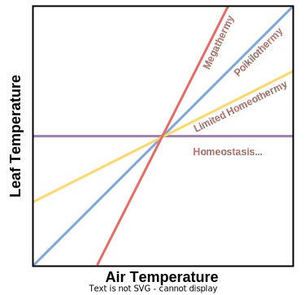

Motivation
Why Care About Leaf Temperatures?
In the realm of modern ecological research, a rather unassuming aspect has gained substantial attention: the temperature of leaves. This seemingly trivial factor, however, plays a crucial role in understanding the dynamics of ecosystems and the biophysical processes that drive them. Moreover, the beauty of leaf temperature modelling lies in its practicality and real-world implications. For example in agriculture, knowing a crop’s leaf temperature and how it varies under upcoming weather may allow a farmer to take protective actions like shading or increased irrigation to protect that crop from heat stress.
Or consider the field of Earth system modeling, where many models often use air temperatures to calculate photosynthetic processes for the lack of a comprehensive leaf temperature model. However, as described below, it remains unclear to what extent leaf temperatures depart from air temperatures and why. Even a departure of a few ºC may propagate through an entire model and cause flawed prediction of photosynthesis. Considering that climate change impacts are driven by the change in global surface temperature, ignoring leaf temperature hampers the reliability of impact predictions.
The Debate on Leaf Thermoregulation
Even though leaf thermoregulation, that is the mechanism by which leaves may change their temperature, has been researched for decades [@mahan1988maintenance], there has been a substantial debate growing in recent years (see timeline below). Essentially, the debate centers around the question: “Can plants actively regulate their leaf temperature and if so, when and how?”.
@cavaleri2020cold visualized this debate neatly, shown here in Figure 1. The Figure depicts different potential leaf thermoregulation strategies that plants may follow. These strategies can be identified by slope of regressing leaf temperature against air temperature:
Megathermy describes the case when a leaf warms faster than its surrounding air warms (slope > 1).
Poikilothermy describes the case when a leaf’s temperature changes one-to-one with air temperature (slope = 1). Note that “poikilothermy with offset” describes the case of poikilothermy but consistently higher leaf than air temperatures.
Limited Homeothermy describes the case when a leaf warms less quickly than its surrounding air (slope < 1).
Homeostasis describes the case when a leaf’s temperature does not change irrespective of changes in temperature.
From a physical point of view, a leaf’s temperature arises from the amount of energy it receives through short- and long-wave irradiation, and the amount of energy it loses through latent heat, sensible heat, and long-wave radiation (more on this in ?@sec-theory. Since a leaves do not produce significant heat through biophysical processes, they can primarily modify their leaf temperature through two path ways. Either, they try to avoid incoming energy from sunlight by adjusting their leaf angle. Or, they increase their energy loss via latent heat by opening their stomata to increase transpiration.
This latter mechanism has become a scientific debate, since it supports the “limited homeothermy” hypothesis meaning that plants actively cool as their surrounding air warms up to avoid heat stress or even damage @mahan1988maintenance. However, this hypothesis has been questioned and the hypothesis of “poikilothermy” has gained traction (see below). Here’s a short (not extensive) overview of the most recent publications and their main findings on this topic:
Pro “limited homeothermy”:
@blonder2018model gathered a large leaf-level temperature data set across north america and highlighted that thermoregulation varies a lot across different micro climates. They show that the slope of leaf against air temperature is predictable, especially considering the cooling effect of opening stomata to avoid lethal heat stress.
@dong2017biophysical found that monitoring the diurnal cycle of leaf temperature shows exceeding leaf temperature only during midday. But from sunset to sunrise, leaves they can cool themselves below air temperature by increasing transpiration.
Contra “limited homeothermy”:
@guo2023does paired FLUXNET data with MODIS land surface data and found that for the extratropics most ecosystems tend to exhibit poikilothermy with offset and that the difference between leaf and air temperature is primarily driven by abiotic factors. Also see comment by @drake2023data for broader context.
@still2022no analyzed thermal imaging data across US forests and that canopy leaves tend to be warmer than their surrounding air. They highlighted the diurnal pattern whereby leaf temperature exceeds air temperature mostly during midday.
@drake2020no compared leaf-level temperature measurements against re-constructed leaf temperatures from isotopic signatures and found that both methods indicate no thermoregulation in eucalyptus, even under warming treatments.
Related but without stance:
@doughty2023tropical analysed tropical canopy temperature by pairing data from remote-sensing, from in-situ thermocouples, and from warming experiments. They found that 0.01% of leaves exceed the critical threshold temperature above which lethal damage occurs (~46.7ºC). Experimental warming increased this percentage in non-linear manner. Using an empirical model, they estimated that tropical forests can withstand a warming of ~4ºC before potentially reaching a metabolic tipping point.
@vinod2023thermal review paper on mechanisms and drivers of thermal sensitivity gradients within forest canopies.
@still2021imaging discusses methods to combine multi-scale data to understand leaf thermoregulation.
@cavaleri2020cold summarized the ongoing debate and highlighted that thermoregulation is not an isolated process but that one needs to account for species variation, canopy structure (“umbrella effect”), and thermal acclimation.
From this inconclusive literature, it is clear that the debate about leaf thermoregulation is not settled. What is more, more and more data from different methods (hand-held device measurements, thermocouples, near and remote thermal imaging, isotopic signature, etc.) deliver different insights at different scales (leaf, canopy, ecosystem). It is thus no wonder that there are papers like “The 90 ways to describe plant temperature” by @korner201890.
The Use of Eco-Evolutionary Optimality Theory
The idea of eco-evolutionary optimality theory (EEO) was well described by @harrison2021eco:
EEO invokes the power of natural selection to eliminate noncompetitive trait combinations, and thereby shape predictable, general patterns in vegetation structure and composition. The term ‘eco-evolutionary’ expresses the fact that organisms adjust to their environment on both shorter (eco-physiological, days to months) timescales and longer (demographic and evolutionary) timescales.
The key take-away from this definition is the hypothesis that we can describe the composition of an ecosystem and its traits as a consequence of the climatic environment [@franklin2020organizing]. By coming up with EEO-based constraints for how an ecosystem must have evolved under a given climate, we can predict key photosynthetic processes using nothing else but information on the environment. Compared to the common approach to describe these processes with empirical fixed parametrization, EEO-principles allow more flexible predictions and gradual development of ecosystems under global change into account. Therefore, these principles offer a great opportunity to create more reliable, robust, and realistic Earth system models [@prentice2015reliable].
Due to being a fundamental driver of photosynthesis, its complexity in assessing, and the ongoing scientific debate, the field of leaf thermoregulation is definitely worth taking a deep dive! Moreover, by exploiting EEO principles, we can create a model that accounts for the interplay of thermal acclimation and thermoregulation. Understanding this interplay is an unresolved but highly relevant question because it gives insights into the processes a plant may use to cope with a rising temperatures [@cavaleri2020cold].